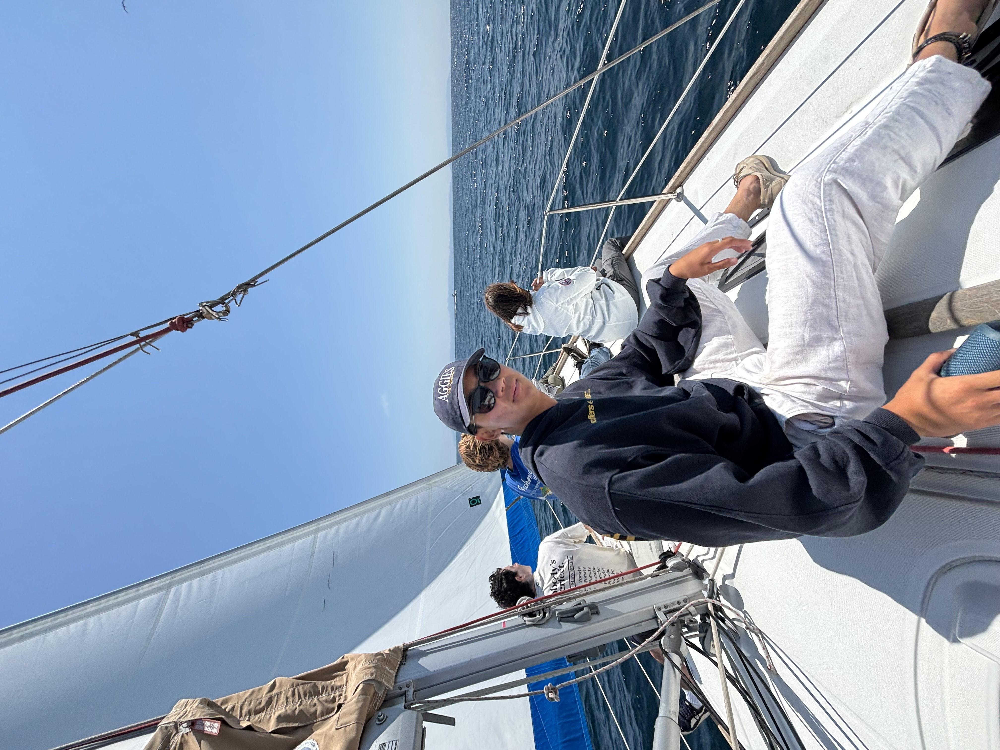

Video & creative
I film and edit videos and make the kind of content that helps a brand look its best.
- Filming and editing video
- Content for ads and social media
- A consistent look for your brand
- A second set of eyes on creative ideas
I'm an entrepreneurial engineer with research experience. I shoot video for everywhere from small businesses and brands to startups and product launches. If you have a project that needs a careful, hands-on person, you're in the right place.

I film and edit videos and make the kind of content that helps a brand look its best.
Hands-on help for projects that need a technical mind — building things, making sense of data, and thinking through the business side.
Simple apps that help you keep track of the things you care about — from your daily habits to your money.
I'm studying biomedical engineering at USC (BS), with a product development engineering master's on the way. I've spent time in labs working on health and science research, and I'm comfortable digging through data to find what actually matters — using tools like MATLAB, R, and Python to crunch the numbers.
I've worn a lot of hats at small startups — running the day-to-day, designing products, writing the code, and helping things grow. Right now I'm building two apps, Statz and Bink, that real people use every day.